Honest Work Farms Honest Work Farms 是 Polygon 上的固定供应通缩代币，上限为 432,144 🚜 这个充满活力的农业社区的目标是双重的： 提供稳定的收益流 提供对价格波动和波动的保护。 为了实现这些目标
Huckleberry Huckleberry 是一个基于 Moonriver 的社区驱动的 AMM 跨链 DEX 和借贷平台。我们所做的一切都是社区驱动的，这允许所有用户对 DEX 的未来方向有发言权。 Huckleberry 的基本功能 交换🔄 通过我们
Hunny PancakeHunny 旨在为用户提供最简单的方式加入 DeFi 世界的潮流，建立在 PancakeSwap 之上，为您提供最美味的 HUNNY 蛋糕。我们支持底层 DeFi 技术和生态系统，通过币安智能链 (BSC) 复合用户收
HunnySwap HunnySwap 是 Avalanche 生态系统上的自动做市 (AMM) 去中心化交易所 (DEX)。 凭借我们在 BSC 支持者的强大支持，以及 Avalanche 的潜在曝光以吸引新用户。 XOXO 是原生货币，将通过跨链 iGaming
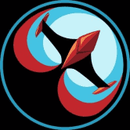 HyperJump.fi AMM & YieldFarm HyperBurn (HYPR) 50% 分配给持有人钱包 25% 永远耗尽总供应量 25% 分配给烧毁金库用于开发 HyperAlloy (ALLOY) 排放量：每块 3.14 回购并燃烧 0.1% 的 AMM 费用 回购并燃烧收益农场存款费 HyperJump 生态系统 HyperJump 是
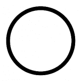 iAssets iAssets 为创作者提供区块链技术。 iAssets 旨在开发基于 NFT 的产品和服务，以构建资产互联网。 新架构✅ 设计⚙ 白皮书⚙ 发展⚙ 铸造 100 个 NFT == 10 美元 ✅ iAssets.Market 比以往任何时候都
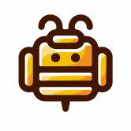 iBee Finance iBee Finance 是币安智能链上的下一代收益优化器，使用创新的协议库系统。 我们是 BSC 上第一个独家单一资产高收益优化器，在每个金库中奖励三种不同的代币。 我们创
Ice Colony Ice Colony 是一款 GameFi。该 dapp 将在其后期阶段展示 NFT 集成、基础构建游戏和纸牌游戏。 自地球上的矿藏枯竭以来，已有数千年的历史，人类将注意力转向了太
ImmortalDAO Finance Immortal 是 Celo 区块链上基于 IMMO 代币的去中心化储备货币协议。每个 IMMO 代币都由 Immortal 宝库中的一篮子资产（例如 mcUSD）支持，赋予其不可低于的内在价值。 Immortal 还通过
ImpDAO 什么是 ImpDAO (IMP)？ ImpDAO 于 2022 年 2 月 12 日在 Fantom 生态系统上启动，是 Olympus 协议的一个分支，专注于积极的资金部署。 ImpDAO 利用部分储备货币技术作为筹款工具来创建去
Impossible Finance Impossible Finance 是由 Ex-Binance & DeFi行业的 资深人士。它提供了一个强大的产品优先的生态系统，支持面向目标用户受众的顶级区块链项目。在加密行业主要领导者的广泛支
Increment Finance IncrementFi 是一站式 DeFi 套件，在 Flow 区块链上提供流动性（IncrementSwap：permisionless AMM DEX）和收益（IncrementEarn
Infinite Launch Infinite Launch 是一个跨链启动板，用于精心挑选的 DeFi 和 NFT 项目，具有有史以来第一个机制，持有者可以锁定他们的代币以保证 IDO 分配，而无需持有启动板代币。 Infinite Launch - 每
Intermedium OROS.finance 为 OROS 代币创建的第一个 defi 平台，充当发起人和客户之间的中介。和骗子说再见。有了 Intermedium，您不必再为做得不对的工作付费，也不必在没
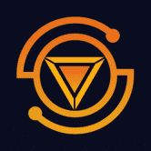 Iron Finance IRON FINANCE 构建多链部分抵押的 DeFi 和算法稳定币生态系统 Iron Finance 正在 Polygon 网络上构建一整套产品和用例的去中心化金融生态系统。 Iron Finance 的官方代币是 ICE 代币，灵感来自冰与
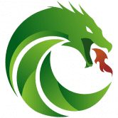 Jade Protocol Jade Protocol 是币安智能链上的去中心化储备货币平台。与与美元价值挂钩的 DAI 或 USDC 不同，JADE 的储备是由 Jade Protocol 财政部持有的加密资产。 JADE 是一种自由浮动货币，由
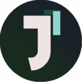 Jin Finance JinFinance 是一种基于 Fuse Network 的非托管流动性质押协议。您可以通过 JinFinance 协议质押您的 FUSE 代币，并获得可用于去中心化金融 (DeFi) 的“流动质押 FUSE”代币 (sFUSE)。
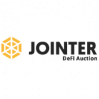 Jointer DeFi Ecosystem Jointer 是一个商业房地产区块链 DAO，在加利福尼亚州硅谷和以色列特拉维夫的远程团队经验总市值超过 400B 美元。 Jointer 是一家屡获殊荣的公司，其中包括 2018 年在 196 个
JonnyBlockchain 让您的投资组合为您服务，拥有最先进的加密货币管理和套利套件。我们的机器人让您轻松套利和管理您的所有交易所，利润分享 Tron 智能合约高达 125% 的回报。 Jonny
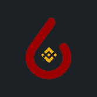 Jul BNB Farming JustLiuidity 是一种流动性协议，它与 JulSwap 交易所集成，并通过 JULb 奖励流动性提供者以及以其独特的金融和流动性引擎奖励 JULb 代币持有者。 JULb 代币 JustLiquidity DeFi 代币具有弹性供应结构
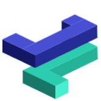 JustLend 波场第一个官方借贷平台，用户可以借入、出借、存入资产和赚取利息。 JustLend 是一个基于 TRON 的货币市场协议，旨在建立资金池，其利率由基于 TRON 资产供求的算法确
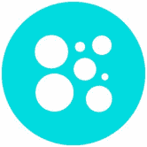 KACO Finance Kaco Finance 是 Polkadot 去中心化交易所和合成资产协议 Coinversation 发行的 DEX 的 evm 版本。 Kaco Finance是基于币安智能链和Kusama平行链的跨链去中心化交易平台。 Kaco Finance 最初
Kagla Finance Kagla 是专门用于稳定交换的 AMM，允许流动性提供者赚取费用并借出他们的稳定币来赚取奖励。 使用 ve 函数提高您的奖励。 Kagla Finance 是 Astar Network 上领先的 AMM（自动做
Kalata Kalata 协议 (KALA) 是一种合成资产协议。 Kalata 第一版可以实现与股票价格的 1:1 挂钩，让传统金融界的用户以更低的成本学习 Defi。不需要复杂的过程。用户只需将他/
Kardia info 该网站旨在提供有关 KardiaChain 网络上代币的准确和最新信息，以及预言机、赌注、农业和博彩迷你游戏。 旨在提供有关 KardiaChain 网络和预言机上代币的准确和最新信息的网站
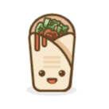 Kebab Finance 今天的 Kebab 代币价格为 10.43 美元，24 小时交易量为 2.600.631 美元。 Kebab 代币在过去 24 小时内下跌了 5.37%。当前 CoinMarketCap 排名为 #840，市值为 7.492.020 美元。它有 718.415 枚 KEBAB 代币的
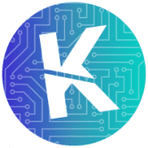 KeeCoin KeeCoin Token 的创建者成员开发了完全去中心化的 DAPP，用于自动创建和管理投资组合。通过创新的 Armony Dashboard，可以直接以绝对去中心化的方式管理您
Keep3r BSC Network Keep3r BSC Network是币安智能链上第一个去中心化的keeper网络项目。 开发人员角色高度专业化，很难找到合适的人选。 @kp3rb 使用 NSC 网络上的自由平台解
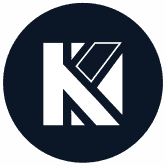 Kesef Finance DeFi 生态系统主要基于 Yield Farming 并提供流动性。但是，如果这个空间必须发展并成为现实世界问题的解决方案，那么 DeFi 的定义也应该发展。这正是 Kesef 的全部意义所在。
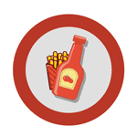 Ketchup.Finance 社区驱动 整个 Ketchup.Finance 生态系统是一个社区驱动的项目。大多数关于功能、新矿池、新农场、代币列表和更新的决定将由社区提出和投票。通过在 Ketchup.Finance 上进行 Yield 农业，Y
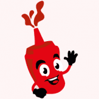 KetchupSwap KetchupFinance 是一个自动化做市商 (AMM) — 一种去中心化金融 (DeFi) 应用程序，允许用户交换代币，通过农业提供流动性并赚取费用作为回报。 这是一个去中心化的交易所，用于在
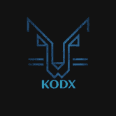 KODX KODX 用于质押、借贷、借贷的新网关建立在 TRON 区块链上，最大供应量为 33K KODX 是一种去中心化的金融聚合协议，可同时提供多种质押和借贷产品。 KODX 将被设置为&h


 相结合")


，它创建和维护结构化的 DeFi 产品，并由 INDEX 代币持有者管理。")


 去中心化交易所 (DEX).")